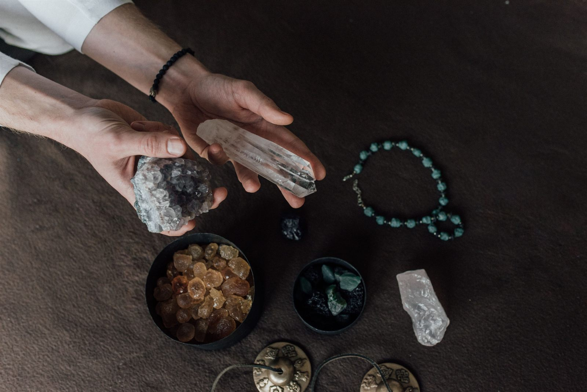

Three to four times a year, the astrological community collectively holds its breath. Mercury, the planet that governs communication, technology, travel, and logic, appears to spin backward in the sky. During Mercury Retrograde, the natural flow of information gets tangled. Emails bounce, flights are delayed, old exes suddenly text you, and simple conversations turn into massive misunderstandings.
While you cannot stop the planets from moving, you can create an energetic buffer between your aura and the cosmic chaos. This is where crystal magic shines. By working with specific stones that target clarity, grounding, and communication, you can ride out the retrograde wave without losing your mind.
The Retrograde Survival Kit: 4 Essential Stones
Not just any crystal will do during this transit. You need stones that specifically counteract Mercury’s favorite disruptions: mental fog, emotional reactivity, and technological meltdowns.
1. Black Tourmaline: The Spiritual Bouncer
When the cosmic weather gets rough, Black Tourmaline is your heavy-duty shield. This deeply protective stone absorbs chaotic, erratic energy from your environment so it doesn’t settle into your aura. It is particularly known for its ability to block electromagnetic smog, making it the perfect companion when your laptop and Wi-Fi are acting up.
The Vibe: Energetic protection and boundary setting.
2. Rainbow Fluorite: The Antidote to Brain Fog
Mercury Retrograde is famous for making you feel like you cannot think straight. Fluorite, often called the “Genius Stone,” acts like a vacuum for scattered, disorganized thoughts. When emotional logic tries to take over, Fluorite pulls you back into sharp, structured thinking, helping you make clear decisions when everything else feels blurry.
The Vibe: Extreme mental clarity, focus, and order.
3. Amazonite: The Throat Chakra Soother
Because Mercury rules communication, the Throat Chakra takes a massive hit during a retrograde. Amazonite is the stone of truth and harmony. It helps you speak your mind clearly but calmly, soothing the impulse to send a reactive text message. It bridges the heart and the throat, ensuring you communicate with empathy rather than frustration.
The Vibe: Honest, calm, and boundary-driven communication.
4. Hematite: The Heavy Anchor
When plans change at the last minute or travel delays leave you stranded, it is easy to spiral into anxiety. Hematite is a heavy, metallic iron-oxide stone that immediately pulls your energy downward, out of your buzzing, stressed-out head and back into your physical body.
The Vibe: Ultimate grounding, stability, and resilience.
Practical Magic: How to Use Your Crystals
You don’t need a complex, two-hour ritual to make these stones work for you. During a retrograde, keep your magic simple and intentional.
- The Desk Anchor: Place a piece of Black Tourmaline and a Fluorite octahedron right next to your computer. They won’t magically fix a broken hard drive, but they create an energetic anchor in your workspace that helps you stay calm and focused when the tech inevitably goes sideways.
- The Pocket Method: If you are traveling or heading into a high-stakes meeting, carry a piece of Amazonite and Hematite in your pocket. Before you speak, or when you feel your frustration rising at the airport gate, reach into your pocket, touch the stones, and take a deep breath.
- The Retrograde Protection Grid: For the duration of the transit, set up a simple crystal grid in your bedroom. Place a Clear Quartz point in the center to amplify your intention, and surround it with Tourmaline, Fluorite, and Amazonite. State your intention out loud: “I am grounded, I communicate clearly, and my energy is protected from chaos.” Leave it up until the retrograde shadow period clears.
Sources & Further Reading
- Crystals Alchemy: “Best Crystals for Mercury Retrograde: Your Survival Guide”
- Love Crystals: “Mercury Retrograde Crystals”
- Happy Soul Crystals: “Navigating Mercury Retrograde with Crystals”